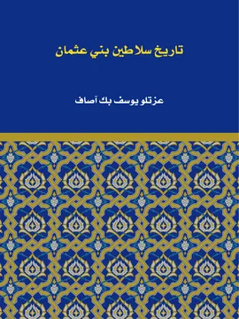

تاريخ سلاطين بني عثمان

قراءة عربية أصلية محددة النطاق في الصفحات 11، 12 من ملف PDF المرتبط، وليست تلخيصا كاملا للكتاب. نناقش ما تدعمه هذه المقاطع فقط.
باشوات مصر الأوائل
يفتتح الفصل بسجل الولاة: باشوات مصر أولا في عهد سليم الأول وسليمان الأول؛ خاير بك بركس سنة ٩٢٣هـ وقد مات في جزيرة ردوس سنة ٩٢٨هـ، ثم مصطفى سنة ٩٢٨هـ وقد ترك الحكم سنة ٩٢٩هـ، ثم كوزلجه قاسم سنة ٩٢٩هـ وقد ترك الحكم بعد تقلده بحوالي أربعة وعشرين يوما، ثم أحمد سنة ٩٢٩هـ وقد مات سنة ٩٣٠هـ، ثم كوزلجه قاسم مرة ثانية حتى سنة ٩٣١هـ، فإبراهيم الصدر الأعظم سنة ٩٣٠هـ وقد استدعي إلى القسطنطينية، فخادم سليمان من سنة ٩٣١هـ حتى ٩٤١هـ، فخسرو حتى سنة ٩٤٣هـ، ثم خادم سليمان للمرة الثانية، فداود حتى وفاته سنة ٩٥٦هـ، فعلي سمري الذي تقلد الصدارة العظمى. سجل دقيق بتواريخ التولية والعزل يؤرخ لإدارة مصر العثمانية الأولى.
زاوية وحدود القراءة
قراءة الصفحتين ١١ و١٢ (فصل باشوات مصر)؛ النطاق سجل الولاة الأول فقط.
الطبعة والقراءة
صدرت هذه النسخة عن مؤسسة هنداوي عام ٢٠١١. جميع حقوق النشر الخاصة بتصميم هذا الكتاب وتصميم الغلاف مُرَخَّصة بموجب رخصة المشاع الإبداعي: نَسَبُ المُصنَّف، الإصدار ٤٫٠. جميع حقوق النشر الخاصة بنص العمل الأصلي خاضعة للملكية العامة.
تنزيل PDF المجاني ↓ القراءة والمصدر الرسمي ↗